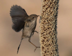
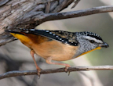
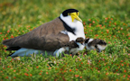

2019 Newsletters
If you would like to receive North Head Sanctuary Foundation newsletters via your email, just ask to be put on the mailing list by contacting:
northhead@fastmail.com.au

Tick under microscope
January 2019
Volunteers welcome for Education Room and Nursery; Ocean Care Day; A word about ticks; Cryptostylis erecta; Ecological Society of Australia’s (ESA) Annual Conference; Third Cemetery - Pte Hector Fraser HICKS

Elizabeth McGregor
February 2019
General meeting Feb 23 - Matthew Taylor speaking about birds of North Head; Congratulations to Dr Paul Lancaster; "Surviving Influenza at Quarantine Station" talk on March 5 at Sydney Harbour Federation Trust offices; Update on Animal re-introductions in North Head bushland; Avoiding ticks; Vegetation surveying; Third Cemetery - Sister Elizabeth McGregor - Part 1

Brush Turkey chick
March 2019
Society for Insect Studies event - March 9, 2019; Brush Turkey chick; Fire and ESBS on North Head - poster presentation at International event in Darling Harbour; "My North Head"; Christmas Bells on North Head; Third Cemetery - Sister Elizabeth McGregor - Part 2

Nursery Group
April 2019
Report from Society for Insect Studies walk held March 9; Echidna rescued from being in a drain; Celebration event after 20 years of dedicated work by the Nursery Group.

Turkey pecks Echidna
May 2019
General Meeting on Saturday May 25; Things you find in Building 20 - our education centre called "Bandicoot Heaven"; Volunteering in the Native Plant Nursery; "My North Head" by Kath Pearce, Turkey pecks Echidna; Building a Bee Motel; Trailer needed to transport Nursery benches

Praying Mantis
June 2019
Bandicoot Heaven; Native Plant Nursery; Praying/preying Mantis on a Banksia flower; Donation of equipment to Indigrow; Third Cemetery; Sydney Morning Herald report about the conditions on the immigrant ship "Allanshaw".

Xanthorrhoea after fire
July 2019
Education room; Mosman High School visit the Nursery; Water in the hanging swamp; Whales seen off North Head; The 135 Stuarts' bus; Third Cemetery - smallpox on the French steamer "Ville de la Ciotat"

Recovery after fire
August 2019
Meeting 2pm August 17 - speaker Carole Rollings from Manly Little Penguin Watch; Acianthus fornicatus - a tiny orchid on North Head; 15month post-fire survey; Third Cemetery - Sydney Cecil Pepper, a plague victim

Wren feeding on nectar
September 2019
Q Station - Open Day- Life in Quarantine 10am – 2pm, Sunday 15th September; Wren feeding on nectar of Xanthorrhoea flowers; Imperata cylindrica; Spring Wildflower Walks; Back in Time - housing in early Sydney; North Head is a Botanist’s Heaven with nearly 500 native species of plants.

Male pardalote
October 2019
Native Plant Nursery; Education Room; North Head Bird photo - pardalote; Annual General Meeting; Guided Wildflower Walks; Styphelia triflora or Five Corners; Wildflower report from 1933; Building 20 now used as "Bandicoot Heaven" - 80 year history; Third Cemetery - smallpox onboard the "Eastern".

Plover family
November 2019
Annual General Meeting on November 9 with Colonel Peter Sweeney speaking about military history in Sydney Harbour; Native Plant Nursery has the shade cloth installed for the Summer; Morning tea with Dr Viyanna Leo; Ocean Care Day now part of Ocean Week; Plover chicks; Life as part of Quarantine Station staff family.

ICMS volunteers
December 2019
Ocean Care Day - Dec 1; Volunteer with Native Plant Nursery or Education Room; Independent review of the Sydney Harbour Federation Trust; Calyptorhynchus funereus - Black Cockatoo; Snake and spider awareness; Mosman High School ‘Environmental Expo’; Volunteer day - students from the International College of Management Sydney.